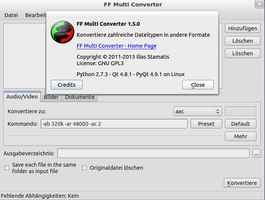
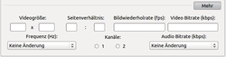
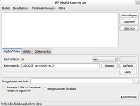
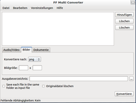
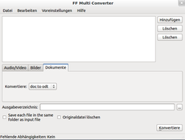
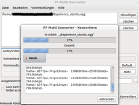
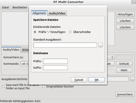
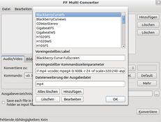

FF Multi Converter
Dieser Artikel wurde für die folgenden Ubuntu-Versionen getestet:
Ubuntu 14.04 Trusty Tahr
Zum Verständnis dieses Artikels sind folgende Seiten hilfreich:
FF Multi Converter  ist eine übersichtlich gehaltene grafische Oberfläche, die sich zum Konvertieren von Audio-, Video-, Bild- und Dokument-Dateien eignet und die meisten populären Formate unter einer Anwendung unterstützt. Zum Konvertieren wird FFmpeg für Audio-/Video-Dateien, unoconv für Dokument-Dateien sowie ImageMagick für Bilder verwendet. Geschrieben in Python und Qt, unterliegt diese Anwendung der Gpl3 und gilt damit als freie Software .
ist eine übersichtlich gehaltene grafische Oberfläche, die sich zum Konvertieren von Audio-, Video-, Bild- und Dokument-Dateien eignet und die meisten populären Formate unter einer Anwendung unterstützt. Zum Konvertieren wird FFmpeg für Audio-/Video-Dateien, unoconv für Dokument-Dateien sowie ImageMagick für Bilder verwendet. Geschrieben in Python und Qt, unterliegt diese Anwendung der Gpl3 und gilt damit als freie Software .
|  |
| FF Multi Converter |
Unterstützte Formate:
"Audio/Video": aac, ac3, avi, dvd, flac, flv, mka, mkv, mmf, mov, mp3, mp4, mpg, ogg, vob, wav, webm, wma, wmv …
"Bilder": bmp, cgm, dpx, emf, eps, fpx, gif, jpeg, mrsid, p7, pdf, picon, png, ppm, psd, rad, tga, tif, webp, xpm …
"Dokumente": doc, pdf, html, odt, txt, rtf, sxw, xml …
und viele weitere mehr, was sich auf der Projektseite nachlesen lässt.
Installation¶
 Das Programm ist noch nicht in den offiziellen Paketquellen enthalten und muss somit über ein "Personal Package Archiv" (PPA) [1] oder manuell installiert werden. Da FFmpeg bei Ubuntu 14.04 nicht in den offiziellen Paketquellen enthalten ist, muss dieses entweder separat installiert oder avconv in den Einstellungen aktiviert verwendet werden.
Das Programm ist noch nicht in den offiziellen Paketquellen enthalten und muss somit über ein "Personal Package Archiv" (PPA) [1] oder manuell installiert werden. Da FFmpeg bei Ubuntu 14.04 nicht in den offiziellen Paketquellen enthalten ist, muss dieses entweder separat installiert oder avconv in den Einstellungen aktiviert verwendet werden.
PPA¶
Adresszeile zum Hinzufügen des PPAs:
ppa:ffmulticonverter/stable
Hinweis!
Zusätzliche Fremdquellen können das System gefährden.
Ein PPA unterstützt nicht zwangsläufig alle Ubuntu-Versionen. Weitere Informationen sind der  PPA-Beschreibung des Eigentümers/Teams ffmulticonverter zu entnehmen.
PPA-Beschreibung des Eigentümers/Teams ffmulticonverter zu entnehmen.
Damit Pakete aus dem PPA genutzt werden können, müssen die Paketquellen neu eingelesen werden.
Nach dem Aktualisieren der Paketquellen erfolgt die Installation über das folgende Paket [2]:
ffmulticonverter (ppa)
 mit apturl
mit apturl
Paketliste zum Kopieren:
sudo apt-get install ffmulticonverter
sudo aptitude install ffmulticonverter
Verwendung¶
Bei Ubuntu-Varianten mit einem Anwendungsmenü erfolgt der Programmstart [3] über den Menü-Eintrag "Multimedia → ffmulticonverter", bei Unity und der GNOME SHell kann der Programmname eingegeben werden.
Die Arbeitsschritte sind wie folgt:
Dateien aus Quelle importieren
Zu konvertierendes Format wählen
Ausgabeformat wählen
 Dabei ist es zusätzlich möglich, die Originaldatei zu löschen und/oder auch die Dateien im Ausgabeordner zu speichern. Je nach Dateiformat lassen sich verschiedene Zusatzoptionen wählen, bei Bildern bspw. neben dem Format auch die Bildgröße (Auflösung). Beim Konvertieren von Audio-/Video-Dateien können neben dem vorausgewählten Standardbefehl auch eigene "Befehlsoptionen" angewendet werden.
Des Weiteren sind über die Schaltfläche "Mehr" Videogröße, Seitenverhältnis, Frequenzen, Bildwiederholungsraten, Kanäle und Bitraten für Audio und Video anpassbar (siehe Bild).
|  |
| Audio/Video |
|  |
| Bilder |
|  |
| Dokumente |
|  |
| Audio/Video-Konvertierung |
Am unteren Fensterrand der Anwendung befindet sich mit "Fehlende Abhängigkeit" eine Zusatzfunktion, die dem Nutzer anzeigt, ob Pakete, Bibliotheken oder Codecs zum ausführen geplanter Aktionen fehlen. Namentlich genannt kann dann der Anwender einfach fehlendes nachinstallieren, um geplante Konvertierungen auszuführen. Log-Dateien ausgeführter Aktionen finden sich im Bedarfsfall zur Einsicht im Homeverzeichnis (~.config/ffmulticonverter/logs).
Einstellungen¶
 Der Reiter "Datei" ist selbsterklärend, über den Reiter "Bearbeiten → Einstellungen" kann der Anwender neben dem "Clear all" auch Standards für das Speichern des Programms sowie Standardkommandos verändern.
Der Reiter "Datei" ist selbsterklärend, über den Reiter "Bearbeiten → Einstellungen" kann der Anwender neben dem "Clear all" auch Standards für das Speichern des Programms sowie Standardkommandos verändern.
Möglich ist dies über die Optionen:
"Allgemein" - existierende Dateien: "Präfix hinzufügen" oder "Überschreiben", "Standard Ausgabeort", Dateiname: "Präfix" oder "Suffix"
"Audio/Video" - nutze "FFmpeg" oder "avconv" (Standardkommandos festlegen)
Über den Reiter "Voreinstellungen → Voreinstellungen Bearbeiten" können Standards der jeweiligen Codecs, sowie Befehle angepasst, geändert und damit Standardisiert werden.
|  |
| Einstellungen |
|  |
| Voreinstellungen |
- Erstellt mit Inyoka
-
 2004 – 2017 ubuntuusers.de • Einige Rechte vorbehalten
2004 – 2017 ubuntuusers.de • Einige Rechte vorbehalten
Lizenz • Kontakt • Datenschutz • Impressum • Serverstatus -
Serverhousing gespendet von